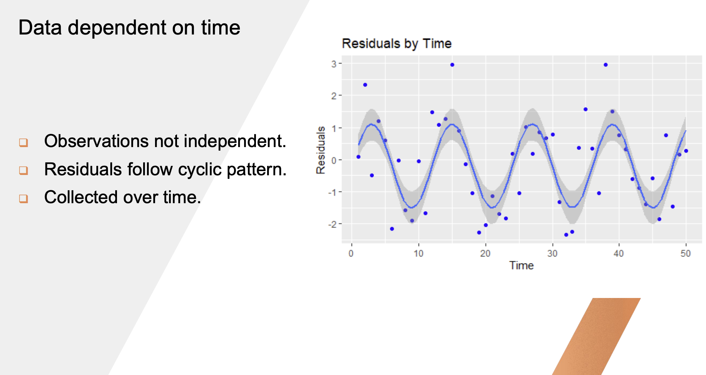
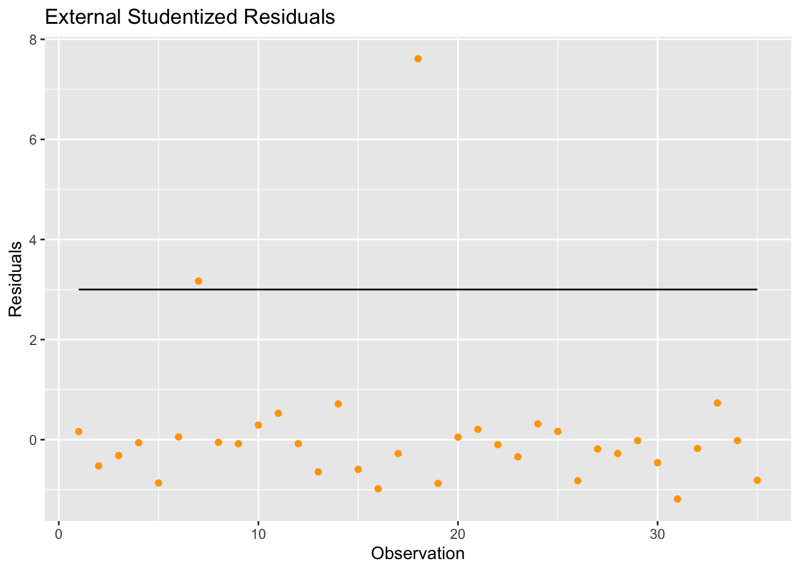

flowchart LR
A[Detecting Outliers] --> B[Standardized Residuals]
A --> C[Studentized Residuals]
X[Detecting Influential Obs.] --> D[Cook's D]
X --> E[DFFITS]
X --> F[DFBETAS]
X --> G[Hat Values]
When we’re trying to understand correlated error terms, we need to know the source of our data:
- Clustered/grouped data
- Observations connected in some way
- Complex surveys
- Repeated measures
- Data gathered over time
1 Autocorrelation
With time-series data, autocorrelation can occur and residuals follow a cyclic pattern. Plot residuals over time to see if any cyclic trends occur.

1.1 Durbin-Watson Statistic (First-Order)
We can also assess autocorrelation using the Durbin-Watson statistic which compares a residual against the previous time residual over the sum of residuals squared.
\[ d = \frac{\sum_{t=2}^{T} (e_t - e_{t-1})^2}{\sum_{t=1}^{T} e_t^2} \]
- Bounded in \([0, 4]\)
- When \(d=2\), fail to reject \(H_0\) and assume there is not enough evidence supporting autocorrelation
- \(d < 2\), possible positive autocorrelation
- \(d > 2\), possible negative autocorrelation
2 Influential Points and Outliers
Two main types of anomalous observations:
- Outliers: points with large standardized residuals
- Leverage Points: point that falls outside the normal range (far from the mean) in the possible values of the predictor (X-space) and have a large “influence” on the regression line
Don’t just focus on residuals of data as residual analysis tends to discover outliers instead of leverage points.
2.1 Diagnostic Statistics
2.1.1 Studentized Residuals
Divide the residuals by their standard errors after deleting that one observation
- \(\left|SR\right| > 2\) for datasets with a relatively small number of observations
- \(\left|SR\right| > 3\) for datasets with relatively large number of observations
2.1.2 Cook’s D
Measures the difference in the regression estimates when the \(i^{th}\) observation is left out
Cutoff formula:
\[ D_i > \frac{4}{n - p - 1} \]
- \(p\) is the number of parameters including the intercept
2.1.3 DFFITS
Measures impact that the \(i^{th}\) observation has on predicted value
\[ \left| DFFITS_i \right| > 2\sqrt{\frac{p}{n}} \]
2.1.4 Hat Values
From the normal equation, the estimate of the parameters is:
\[ b = (X'X)^{-1}X'y \]
Estimated line is:
\[ \hat{y} = X(X'X)^{-1}X'y \]
With the hat values being:
\[ X(X'X)^{-1}X' \]
Suggested cutoff is:
\[ h_{ii} > \frac{2p}{n} \]
2.1.5 DFBETA
Measure of change in the \(j^{th}\) parameter estimate with deletion of \(i^{th}\) observation.
One DFBETA per parameter per observation. Helps to explain which parameter coefficient the influence most lies.
\[ \left| DFBETA_{ij} \right| > 2 \sqrt{\frac{1}{n}} \]
2.2 Scottish Hill Races
Code
library(tidyverse)
url <- "http://www.statsci.org/data/general/hills.txt"
races.table <- read.table(url, header = TRUE, sep = "\t")
races.table <- races.table %>%
mutate(idx = row_number())
lm.model <- lm(Time ~ Distance + Climb, data = races.table)
ggplot(lm.model, aes(x = races.table$idx, y = rstudent(lm.model))) +
geom_point(color = "orange") +
geom_line(y = -3) +
geom_line(y = 3) +
labs(title = "External Studentized Residuals", x = "Observation", y = "Residuals")
2.3 How to Handle Influential Observations
- Recheck data to ensure no transcription or data entry errors occurred.
- If data is valid, maybe model is inadequate
- Higher-order terms may be necessary
- Nonlinear model
- Determine robustness of the inference by running analysis with and without influential observations
- Robust Regression
- Weighted Least Squares
3 Collinearity
If variables are strongly correlated with each other even removing one point can change our model in a completely different way.
3.1 Collinearity Diagnostics
We can look at correlation matrix of predictors, but there is also the variance inflation factor that we can consider:
\[ VIF_i = \frac{1}{1 - R_i^2} \]
- \(R_i^2\) is the \(R^2\) value with all the other variables predicting \(x_i\)
- \(VIF > 10\) indicate collinearity
Code
library(car)Loading required package: carData
Attaching package: 'car'The following object is masked from 'package:dplyr':
recodeThe following object is masked from 'package:purrr':
someCode
cor(mtcars) mpg cyl disp hp drat wt
mpg 1.0000000 -0.8521620 -0.8475514 -0.7761684 0.68117191 -0.8676594
cyl -0.8521620 1.0000000 0.9020329 0.8324475 -0.69993811 0.7824958
disp -0.8475514 0.9020329 1.0000000 0.7909486 -0.71021393 0.8879799
hp -0.7761684 0.8324475 0.7909486 1.0000000 -0.44875912 0.6587479
drat 0.6811719 -0.6999381 -0.7102139 -0.4487591 1.00000000 -0.7124406
wt -0.8676594 0.7824958 0.8879799 0.6587479 -0.71244065 1.0000000
qsec 0.4186840 -0.5912421 -0.4336979 -0.7082234 0.09120476 -0.1747159
vs 0.6640389 -0.8108118 -0.7104159 -0.7230967 0.44027846 -0.5549157
am 0.5998324 -0.5226070 -0.5912270 -0.2432043 0.71271113 -0.6924953
gear 0.4802848 -0.4926866 -0.5555692 -0.1257043 0.69961013 -0.5832870
carb -0.5509251 0.5269883 0.3949769 0.7498125 -0.09078980 0.4276059
qsec vs am gear carb
mpg 0.41868403 0.6640389 0.59983243 0.4802848 -0.55092507
cyl -0.59124207 -0.8108118 -0.52260705 -0.4926866 0.52698829
disp -0.43369788 -0.7104159 -0.59122704 -0.5555692 0.39497686
hp -0.70822339 -0.7230967 -0.24320426 -0.1257043 0.74981247
drat 0.09120476 0.4402785 0.71271113 0.6996101 -0.09078980
wt -0.17471588 -0.5549157 -0.69249526 -0.5832870 0.42760594
qsec 1.00000000 0.7445354 -0.22986086 -0.2126822 -0.65624923
vs 0.74453544 1.0000000 0.16834512 0.2060233 -0.56960714
am -0.22986086 0.1683451 1.00000000 0.7940588 0.05753435
gear -0.21268223 0.2060233 0.79405876 1.0000000 0.27407284
carb -0.65624923 -0.5696071 0.05753435 0.2740728 1.00000000Code
lm.model <- lm(mpg ~ ., data = mtcars)
v <- vif(lm.model)
v[v > 10] cyl disp wt
15.37383 21.62024 15.16489 3.2 Dealing with Multicollinearity
- Exclude redundant independent variables
- Redefine variables
- Use biased regression techniques (e.g. LASSO)
- Center the independent variables in polynomial regression models or models with interaction terms
- Subtract each value of the predictor by the mean of that column
You should be dealing with multicollinearity before you do any model selection.
Any time you take or add variables in, you should be modifying one at a time and recalculating VIF at each step.
4 Effective Modeling Cycle
flowchart LR
1[Preliminary Analysis] --> 2[Collinearity Detection]
2 --> 3[Candidate Model Selection]
3 --> 4[Assumption Validation and Influential Observation Detection]
4 --> 5[Model Revision]
5 -->|Yes| 3
5 -->|No| 6[Prediction Testing]
Following the model selection and assumption validation steps, we might consider what is more important–significant p-values in our variables or the total predictive power of the selected model? The answer is it depends. We can take both models, one where the insignificant p-value variables are pruned and one that was selected by the step selection methods, and run them on a validation set. We see which one performs better and go forward with that model.